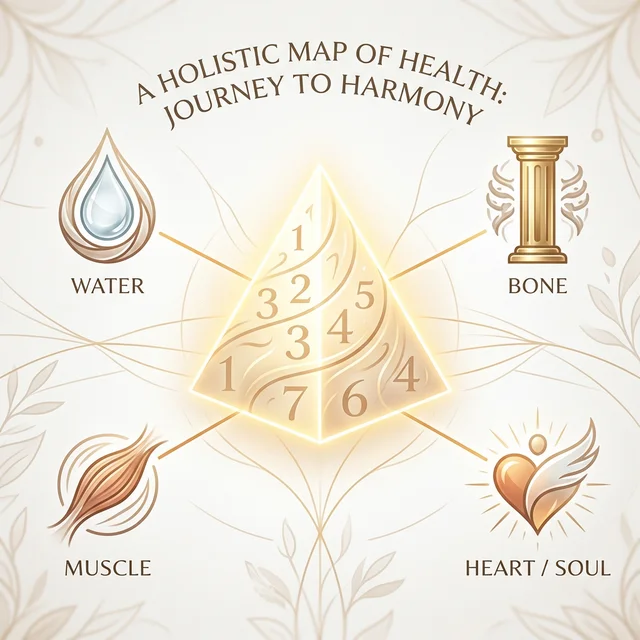
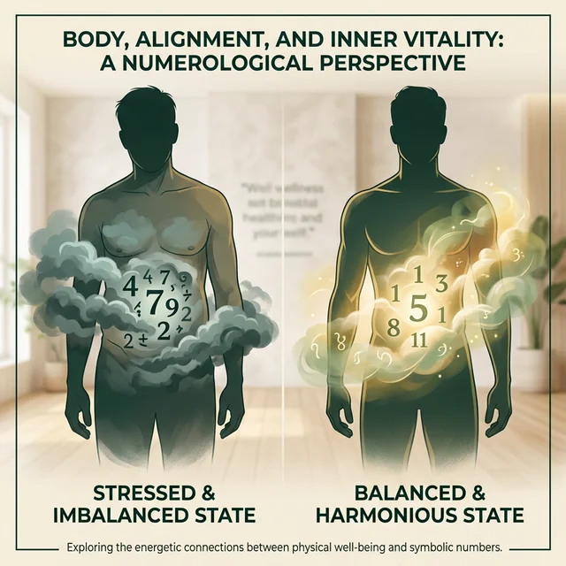

承：數字背後的真相
身心結合的科學解決方案
我們從底層邏輯出發，透過數據理解生理，透過生日密碼理解心理。

📊 生理數據篇
我們不會只看單一的體重數字。我們會從健康五要素與減重三原理的底層邏輯，全面推理所有數據。
關鍵在於動態平衡：當我們全面觀測數據變化，才能提前預判身體的反應（如水腫或免疫力下降），從而做出正確的調整，而非盲目地節食或運動。
🔢 心理命理篇
每個生日數字都有一個底層需求。人們在不理解自己的需求時，常會為了安撫情緒而追求盲目的潮流（聚餐、美食等）。
透握生日數字金字塔，我們可以推理出 80-90% 的性格特質與「情緒按鈕」。透過諮詢補足最後的 10-20%，讓您給自己一個有意識的生活質量。
為什麼要「合一教學」？
身體健康除了營養失衡外，也與內心情緒緊密相關。這就是為什麼「懂身體」加「懂情緒」才是最安全的瘦身法。

男生比例高： 壓力過大時，腹部脂肪（肚皮）特別不容易瘦。這與負擔感與安全感缺失有關。
女生比例高： 情緒堆積多時，容易造成下半身的肥胖與浮腫。這是身體在「儲存」未釋放的委屈。